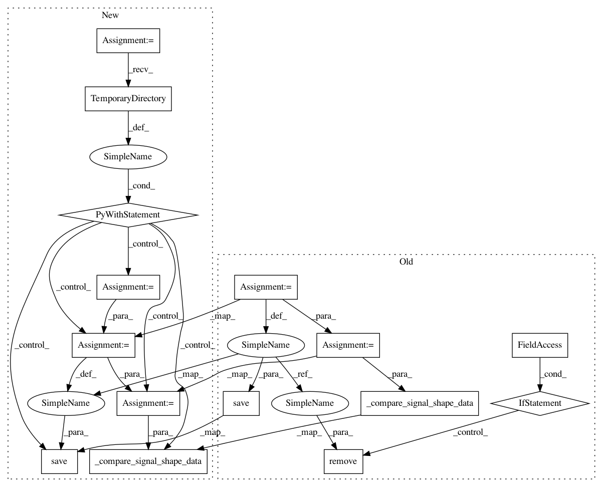

36e8a554066d4d0b05923f7d0d7f43d4dbfb664d,hyperspy/tests/io/test_tiff.py,,test_write_scale_with_undefined_scale,#,326
Before Change
dtype=np.uint8).reshape(
(10,
15)))
fname = os.path.join(my_path, "tiff_files",
"test_export_scale_undefined_scale.tif")
s.save(fname, overwrite=True, export_scale=True)
s1 = hs.load(fname)
_compare_signal_shape_data(s, s1)
if remove_files:
os.remove(fname)
def test_write_scale_with_um_unit():
Lazy test, still need to open the files in ImageJ or DM to check if the
scale and unit are correct
s = hs.load(os.path.join(my_path, "tiff_files",
After Change
dtype=np.uint8).reshape(
(10,
15)))
with tempfile.TemporaryDirectory() as tmpdir:
fname = os.path.join(
tmpdir, "test_export_scale_undefined_scale.tif")
s.save(fname, overwrite=True, export_scale=True)
s1 = hs.load(fname)
_compare_signal_shape_data(s, s1)
def test_write_scale_with_um_unit():
Lazy test, still need to open the files in ImageJ or DM to check if the
scale and unit are correct
s = hs.load(os.path.join(MY_PATH, "tiff_files",
In pattern: SUPERPATTERN
Frequency: 3
Non-data size: 15
Instances
Project Name: hyperspy/hyperspy
Commit Name: 36e8a554066d4d0b05923f7d0d7f43d4dbfb664d
Time: 2016-07-26
Author: frandelapena@gmail.com
File Name: hyperspy/tests/io/test_tiff.py
Class Name:
Method Name: test_write_scale_with_undefined_scale
Project Name: hyperspy/hyperspy
Commit Name: 36e8a554066d4d0b05923f7d0d7f43d4dbfb664d
Time: 2016-07-26
Author: frandelapena@gmail.com
File Name: hyperspy/tests/io/test_tiff.py
Class Name:
Method Name: test_write_scale_unit_image_stack
Project Name: hyperspy/hyperspy
Commit Name: 36e8a554066d4d0b05923f7d0d7f43d4dbfb664d
Time: 2016-07-26
Author: frandelapena@gmail.com
File Name: hyperspy/tests/io/test_tiff.py
Class Name:
Method Name: test_write_scale_with_um_unit